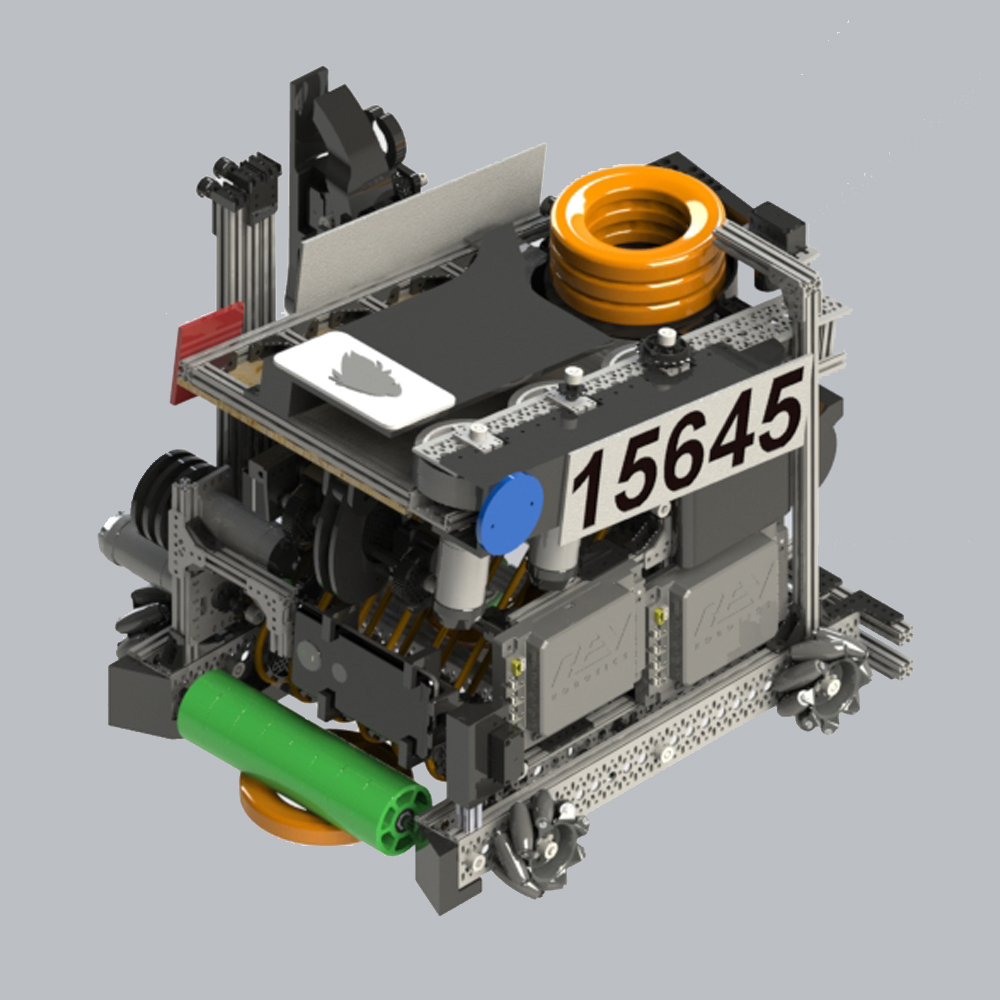

¿De que trata?

Este robot lo diseñé durante septiembre del 2020, para estas fechas teníamos pensado que el tema de la pandemia se solucionaría para finales de año y en enero podríamos competir, de esa forma nace la idea de sin importar los tiempos inciertos crear un diseño que resolviera la problemática de ese año, evidentemente las cosas no se solucionaron para ese entonces y este robot quedó como un simple concepto pero una muy buena experiencia de diseño mecánico.
Las características que hubieran hecho a este robot único son:
- Chasis con llantas mecanum para mover el robot en todas las direcciones.
- Intake dentro del robot con un rodillo de llantas flexibles para recoger discos del suelo.
- Banda transportadora para desplazar los discos desde el intake hasta un contenedor dónde se apilarían 3 de ellos.
- Contenedor con elevador lineal para subir los discos desde su punto mínimo hasta la altura del disparador.
- Servomotor que actuaría como patada para empujar los discos desde su posición en el elevador hasta el disparador.
- Disparador con una serie de 3 llantas a altas revoluciones y dos motores para acelerar los discos lo suficiente y poder disparar desde cualquier rincón de la cancha.
- Ángulo ajustable para orientar la superestructura del disparador en todo el rango de ángulos necesarios.
- Brazo con 2 grados de libertad unido a un elevador para tomar un tubo con base semicircular y sacarlo de la cancha para obtener más puntos.
- Soporte movil para el celular que controla el robot y sirve como cámara para visualizar el entorno.
Para este robot realicé un folleto técnico que describe de mejor manera y visualmente cada parte del roboty el diseño puede encontrarse en mi grabcad.